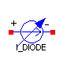
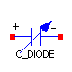

Parameters
| Name | Default | Description |
|---|
| IS | | Reverse saturation current at 300K [A] |
| BV | | Reverse breakdown voltage (positive number) [V] |
| N | | Emission coefficient |
| IKF | | High injection knee current [A] |
| ISR | | Recombination current [A] |
| NR | | Emission coefficient for ISR |
| IBV | | Reverse breakdown current (positive number) [A] |
| M | | Grading coefficient |
| VJ | | Junction potencial [V] |
Modelica definition
model I_DIODE
extends INTERFACE.OnePort;
extends INIT.Part;
parameter SI.Current IS "Reverse saturation current at 300K";
// parameter SI.Conductance GMIN "Conductance in parallel with the pn-junction";
parameter SI.Voltage BV "Reverse breakdown voltage (positive number)";
parameter Real N "Emission coefficient";
parameter SI.Current IKF "High injection knee current";
parameter SI.Current ISR "Recombination current";
parameter Real NR "Emission coefficient for ISR";
parameter SI.Current IBV "Reverse breakdown current (positive number)";
// SI.Current IBV "Reverse breakdown current (positive number)";
parameter Real M "Grading coefficient";
parameter SI.Voltage VJ "Junction potencial";
SI.Voltage vDiodeTran "Voltage drop across the current source";
protected
SI.Conductance gAC(start=1) "AC small-signal conductance";
SI.Voltage thermalVolt "Thermal voltage";
Real KhliDC;
Real KgenDC;
Real KhliDCs(start=1);
Real KgenDCs(start=1);
SI.Current IFDC;
SI.Current IRDC;
SI.Current IFDCs(start=1);
SI.Current IRDCs(start=1);
SI.Current IREVDC;
Real KhliTran;
Real KgenTran;
SI.Current IFTran;
SI.Current IRTran;
SI.Current IREVTran;
Real derKhli;
Real derKgen;
SI.Conductance derIF;
SI.Conductance derIR;
SI.Conductance derIREV;
equation
// Thermal voltage: kT/q
thermalVolt = temp/11600;
// ------------
// Static Model
// ------------
KhliDC = if (IKF > IS and ctrl_DC) then sqrt(IKF/(IKF + IFDC)) else 1;
KgenDC = if (ctrl_DC) then sqrt(((1 - vDC/VJ)^2 + 0.005)^M) else 1;
IFDC = if (ctrl_DC) then IS*(exp(vDC/thermalVolt/N) - 1) else 0;
IRDC = if (ctrl_DC) then ISR*(exp(vDC/thermalVolt/NR) - 1) else 0;
IREVDC = if (ctrl_DC) then IBV*exp(-(BV + vDC)/thermalVolt) else 0;
0 = if (ctrl_DC) then -iDC + KhliDC*IFDC + KgenDC*IRDC - IREVDC + vDC*GMIN*
scaleGMIN else vDC;
// ------------------
// Large-signal Model
// ------------------
KhliTran = if (IKF > IS) then sqrt(IKF/(IKF + IFTran)) else 1;
KgenTran = sqrt(((1 - vDiodeTran/VJ)^2 + 0.005)^M);
IFTran = IS*(exp(vDiodeTran/thermalVolt/N) - 1);
IRTran = ISR*(exp(vDiodeTran/thermalVolt/NR) - 1);
IREVTran = IBV*exp(-(BV + vDiodeTran)/thermalVolt);
iTran = KhliTran*IFTran + KgenTran*IRTran - IREVTran + vTran*GMIN;
// ---------------------
// AC Small Signal Model
// ---------------------
when ctrl_AC then
derIF = IS/thermalVolt/N*exp(vDC/thermalVolt/N);
derIR = ISR/thermalVolt/NR*exp(vDC/thermalVolt/NR);
derIREV = -IBV/thermalVolt*exp(-(BV + vDC)/thermalVolt);
IFDCs = IS*(exp(vDC/thermalVolt/N) - 1);
IRDCs = ISR*(exp(vDC/thermalVolt/NR) - 1);
derKhli = if (IKF > IS) then -0.5/sqrt(IKF/(IKF + IFDCs))*derIF*IKF/(IKF +
IFDCs)^2 else 0;
derKgen = -M/VJ*(1 - vDC/VJ)*((1 - vDC/VJ)^2 + 0.005)^(M/2 - 1);
KhliDCs = if (IKF > IS) then sqrt(IKF/(IKF + IFDCs)) else 1;
KgenDCs = sqrt(((1 - vDC/VJ)^2 + 0.005)^M);
gAC = derKhli*IFDCs + derIF*KhliDCs + derKgen*IRDCs + KgenDCs*derIR +
derIREV + GMIN;
end when;
{iAC_Re,iAC_Im} = gAC*{vAC_Re,vAC_Im};
end I_DIODE;

Parameters
| Name | Default | Description |
|---|
| IC | 0 | Initial voltage [V] |
| IC_ENABLED | false | IC enabled |
| CJ0 | | Zero-bias junction capacitance [F] |
| TT | | Transit time [s] |
| M | | Grading coefficient |
| FC | | Coefficient for forward-bias depletion capacitance formula |
| VJ | | Junction potencial [V] |
| IS | | Reverse saturation current at 300K [A] |
| BV | | Reverse breakdown voltage (positive number) [V] |
| N | | Emission coefficient |
| IKF | | High injection knee current [A] |
| ISR | | Recombination current [A] |
| NR | | Emission coefficient for ISR |
| IBV | | Reverse breakdown current (positive number) [A] |
Modelica definition
model C_DIODE
extends src.BREAKOUT.Capacitor;
extends INIT.Part;
parameter Real CJ0 "Zero-bias junction capacitance [F]";
parameter Real TT "Transit time [s]";
parameter Real M "Grading coefficient";
parameter Real FC
"Coefficient for forward-bias depletion capacitance formula";
parameter SI.Voltage VJ "Junction potencial";
parameter SI.Current IS "Reverse saturation current at 300K";
parameter SI.Voltage BV "Reverse breakdown voltage (positive number)";
parameter Real N "Emission coefficient";
parameter SI.Current IKF "High injection knee current";
parameter SI.Current ISR "Recombination current";
parameter Real NR "Emission coefficient for ISR";
parameter SI.Current IBV "Reverse breakdown current (positive number)";
protected
parameter Real F2=(1 - FC)^(1 + M);
parameter Real F3=1 - FC*(1 + M);
SI.Conductance gAC(start=1);
SI.Conductance gTran(start=1);
SI.Voltage thermalVolt "Thermal voltage";
Real KhliDC;
Real KgenDC;
SI.Current IFDC;
SI.Current IRDC;
Real KhliTran;
Real KgenTran;
SI.Current IFTran;
SI.Current IRTran;
Real derKhliDC;
Real derKgenDC;
Real derKhliTran;
Real derKgenTran;
SI.Conductance derIFDC;
SI.Conductance derIRDC;
SI.Conductance derIREVDC;
SI.Conductance derIFTran;
SI.Conductance derIRTran;
SI.Conductance derIREVTran;
equation
// Thermal voltage: kT/q
thermalVolt = temp/11600;
// ------------------------
// Large-signal capacitance
// ------------------------
Cvar*der(vTran) = iTran;
derIFTran = IS/thermalVolt/N*exp(vTran/thermalVolt/N);
derIRTran = ISR/thermalVolt/NR*exp(vTran/thermalVolt/NR);
derIREVTran = -IBV/thermalVolt*exp(-(BV + vTran)/thermalVolt);
IFTran = IS*(exp(vTran/thermalVolt/N) - 1);
IRTran = ISR*(exp(vTran/thermalVolt/NR) - 1);
derKhliTran = if (IKF > IS) then -0.5/sqrt(IKF/(IKF + IFTran))*derIFTran*IKF/
(IKF + IFTran)^2 else 0;
derKgenTran = -M/VJ*(1 - vTran/VJ)*((1 - vTran/VJ)^2 + 0.005)^(M/2 - 1);
KhliTran = if (IKF > IS) then sqrt(IKF/(IKF + IFTran)) else 1;
KgenTran = sqrt(((1 - vTran/VJ)^2 + 0.005)^M);
gTran = derKhliTran*IFTran + derIFTran*KhliTran + derKgenTran*IRTran +
KgenTran*derIRTran - derIREVTran + GMIN;
Cvar = if noEvent(vTran < FC*VJ) then TT*gTran + CJ0*(1 - vTran/VJ)^(-M)
else TT*gTran + CJ0/F2*(F3 + M*vTran/VJ);
// ---------------------------
// AC small-signal capacitance
// ---------------------------
when ctrl_AC then
derIFDC = IS/thermalVolt/N*exp(vDC/thermalVolt/N);
derIRDC = ISR/thermalVolt/NR*exp(vDC/thermalVolt/NR);
derIREVDC = -IBV/thermalVolt*exp(-(BV + vDC)/thermalVolt);
IFDC = IS*(exp(vDC/thermalVolt/N) - 1);
IRDC = ISR*(exp(vDC/thermalVolt/NR) - 1);
derKhliDC = if (IKF > IS) then -0.5/sqrt(IKF/(IKF + IFDC))*derIFDC*IKF/(IKF
+ IFDC)^2 else 0;
derKgenDC = -M/VJ*(1 - vDC/VJ)*((1 - vDC/VJ)^2 + 0.005)^(M/2 - 1);
KhliDC = if (IKF > IS) then sqrt(IKF/(IKF + IFDC)) else 1;
KgenDC = sqrt(((1 - vDC/VJ)^2 + 0.005)^M);
gAC = derKhliDC*IFDC + derIFDC*KhliDC + derKgenDC*IRDC + KgenDC*derIRDC +
derIREVDC + GMIN;
CvarAC = if (vDC < FC*VJ) then TT*gAC + CJ0*(1 - vDC/VJ)^(-M) else TT*gAC
+ CJ0/F2*(F3 + M*vDC/VJ);
end when;
end C_DIODE;
HTML-documentation generated by Dymola Tue Oct 14 18:26:45 2003
.